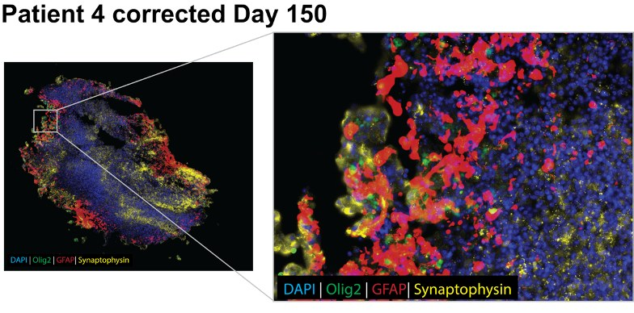
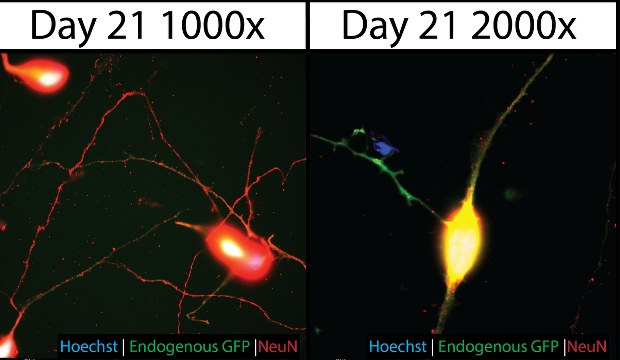
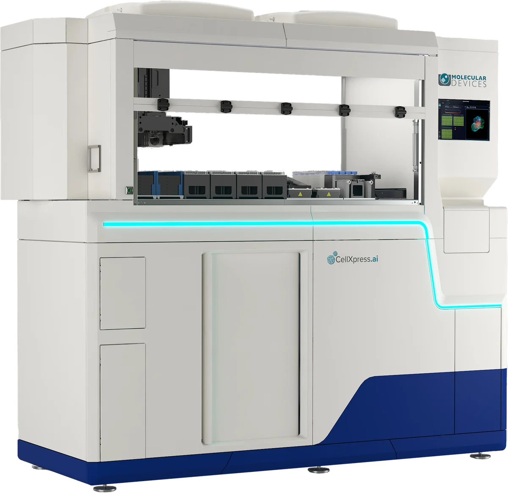

Neuroscience · UCLA
Modeling creatine deficiency in the developing human brain.
Cerebral creatine deficiency syndromes (CCDS) are inborn errors of creatine synthesis (AGAT and GAMT) and transport (SLC6A8). Patients present with intellectual disability, epilepsy and developmental delay because the brain cannot make or take up creatine, its energy reserve. I model these disorders in patient-derived and CRISPR-edited iPSCs, NGN2 cortical neurons and cerebral organoids, and pair the models with population genetics.
- To our knowledge, the first isogenic human iPSC-derived neuron model of GAMT deficiency.
- A platform that combines automated human neuron modeling, drug screening and AAV gene editing for these disorders.
Projects
From a patient variant to a candidate therapy
My research asks how a missing metabolite changes the developing human brain, and whether that can be corrected. Population genetics shows which variants matter, stem-cell neurons show what they do, and automation lets me test treatments at scale.
Patient-derived iPSCs
Lines from patients, plus CRISPR-edited lines that remove the gene.
02Neurons and organoids
NGN2 cortical neurons and cerebral organoids that follow early human development.
03Automated culture and imaging
CellXpress.ai handles the cells and IN Carta reads every image.
04Drug screening
Small molecules tested under identical, automated conditions.
05AAV gene editing
Gene-based strategies to correct the defect.
Research
Human models of GAMT deficiency
Neurologic injury in GAMT deficiency is irreversible once symptoms begin, and current treatment with creatine, L-ornithine and sodium benzoate cannot reverse established damage. These models test how creatine deficiency disrupts human neurodevelopment, and whether earlier intervention could prevent it.

Organoids
Cerebral organoids
Patient-derived and CRISPR-edited iPSCs are patterned into cerebral organoids that follow early human cortical development. GAMT-deficient organoids grow normally but show signs of delayed maturation: near-absent CTIP2, a marker of mature deep-layer cortical neurons, and less Olig2 and GFAP glial staining. These results are preliminary.

Neurons
Cortical neurons from a GAMT knockout line
A CRISPR GAMT knockout iPSC line shows marked suppression of the creatine pathway and downstream metabolism, partially rescued by 72 hours of creatine supplementation. NGN2-induced cortical neurons from this line are delayed in maturation. To our knowledge, this is the first isogenic human iPSC-to-neuron model of GAMT deficiency.
Metabolism
Creatine and guanidinoacetate
GAMT transfers a methyl group from S-adenosylmethionine to GAA to form creatine. Loss of function depletes creatine and causes GAA to accumulate. The work compares how each metabolite affects iPSC proliferation and neuronal maturation, with and without a functional pathway.
Creatine biosynthesis: GATM and GAMT
Interactive schematicC₃H₇N₃O₂
C₄H₉N₃O₂
Schematic of pathway logic, not experimental data. Arrow width scales with relative flux and bar length with relative level.
Automation and screening
Robots feed the cells, software reads the images
My cultures run on a CellXpress.ai automated cell culture system from Molecular Devices, and its images feed directly into IN Carta for analysis. Every plate receives the same handling on the same schedule, which removes operator variability from the measurements.

- Feedautomated media changes
- Imagehigh-content scans
- AnalyzeIN Carta segmentation
96-well plates laid out by genotype and treatment, with untreated controls for each.
Automated feeding, passaging and imaging on a fixed schedule for iPSCs, neurons and organoids.
Segmentation models trained on my own annotations trace neuronal soma and neurite outgrowth in every image.
Per-well measurements ready to compare across genotype, treatment and day.
The same platform that measures neuronal maturation is used to look for ways to correct it, because existing treatment cannot reverse damage once it has occurred.
Drug screening
Compounds are tested on patient-derived and gene-edited neurons, with every plate handled and imaged on the same schedule.
AAV gene editing
AAV vectors are used to test gene-based strategies, including for SLC6A8 deficiency, which does not respond to creatine supplementation.
Gene delivery
How an AAV vector can restore GAMT in a neuron
Adeno-associated virus (AAV) vectors are a leading platform for gene delivery [1], and AAV9 crosses the blood-brain barrier to transduce neurons in neonatal mice [7]. The schematic follows one capsid from the neuronal surface to a working GAMT enzyme, showing a neuron-targeted approach. Liver-directed AAV restored brain creatine and resolved behavioral deficits in Gamt-deficient mice [8], and a CNS-directed AAV9 vector improved brain biochemistry in mice, although its neurological benefit has not yet been tested [12].
Population genetics
How common are the cerebral creatine deficiency syndromes?
Earlier estimates relied on known pathogenic variants in mostly European cohorts. We analyzed 535,662 All of Us genomes and 807,162 gnomAD v4 exomes and genomes for variants in GATM (AGAT), GAMT and SLC6A8, and sorted each variant into three groups, from the most certain to the least. Each group is added to the one before it. We counted how many people carry one nonfunctional copy of these genes.
Established pathogenic
Listed as pathogenic or likely pathogenic in ClinVar, or reported in patients with the disease.
Predicted loss-of-function
Variants that should stop the gene working (premature stop, frameshift, splice-site or start-loss) but are not in the first group.
Predicted damaging
Missense or splice changes that computer tools (REVEL, SpliceAI) predict to be damaging, and that are not classified as pathogenic in ClinVar.
Carrier frequency. One affected US birth every 35 to 470 years. Carriers have 9.6% lower serum creatinine.
GAMT1 in 430 to 720Carrier frequency. Two to five affected US births a year, with more unclassified variants in non-European ancestry groups.
SLC6A8 · CTD1 in 6,400 to 14,800Female carrier frequency. About 18 times as many predicted affected births as GAMT deficiency.
PCOS
Co-occurring conditions, age at diagnosis and genetic markers in a diverse population.
Talks
Presenting creatine deficiency research
A recorded conference talk, and the meetings and symposia where this work has been presented.
From the session “Models of Cerebral Creatine Deficiencies”. The player loads from YouTube when you press play.
- Cerebral Creatine Deficiency Syndromes Conference2026
- Molecular and Medical Pharmacology Pharm Friday2026
- Virtual Cerebral Creatine Deficiency Syndromes Conference2025
- Molecular and Medical Pharmacology Department Retreat2024
- Cerebral Creatine Deficiency Syndrome Scientific and patient symposium2024
- UCLA Semel Institute Stem Cell Research Symposium2022
Publications
Papers, talks and citations
The full list, with citation counts, lives on Google Scholar.
External link
Google Scholar profile
Published work on stem cells, neurons and creatine-related disorders.
References
Sources for the gene delivery schematic
- Wang D, Tai PWL, Gao G. Adeno-associated virus vector as a platform for gene therapy delivery. Nat Rev Drug Discov 2019;18:358-378. doi:10.1038/s41573-019-0012-9
- Pillay S, Meyer NL, Puschnik AS, et al. An essential receptor for adeno-associated virus infection. Nature 2016;530:108-112. doi:10.1038/nature16465
- Douar AM, Poulard K, Stockholm D, Danos O. Intracellular trafficking of adeno-associated virus vectors: routing to the late endosomal compartment and proteasome degradation. J Virol 2001;75:1824-1833. doi:10.1128/JVI.75.4.1824-1833.2001
- Zhong L, Li B, Jayandharan G, et al. Tyrosine-phosphorylation of AAV2 vectors and its consequences on viral intracellular trafficking and transgene expression. Virology 2008;381:194-202. doi:10.1016/j.virol.2008.08.027
- Girod A, Wobus CE, Zadori Z, et al. The VP1 capsid protein of adeno-associated virus type 2 is carrying a phospholipase A2 domain required for virus infectivity. J Gen Virol 2002;83:973-978. doi:10.1099/0022-1317-83-5-973
- Ferrari FK, Samulski T, Shenk T, Samulski RJ. Second-strand synthesis is a rate-limiting step for efficient transduction by recombinant adeno-associated virus vectors. J Virol 1996;70:3227-3234. doi:10.1128/JVI.70.5.3227-3234.1996
- Foust KD, Nurre E, Montgomery CL, et al. Intravascular AAV9 preferentially targets neonatal neurons and adult astrocytes. Nat Biotechnol 2009;27:59-65. doi:10.1038/nbt.1515
- Khoja S, Lambert J, Nitzahn M, et al. Gene therapy for guanidinoacetate methyltransferase deficiency restores cerebral and myocardial creatine while resolving behavioral abnormalities. Mol Ther Methods Clin Dev 2022;25:278-296. doi:10.1016/j.omtm.2022.03.015
- Nonnenmacher M, Weber T. Adeno-associated virus 2 infection requires endocytosis through the CLIC/GEEC pathway. Cell Host Microbe 2011;10:563-576. doi:10.1016/j.chom.2011.10.014
- Xiao PJ, Samulski RJ. Cytoplasmic trafficking, endosomal escape, and perinuclear accumulation of adeno-associated virus type 2 particles are facilitated by microtubule network. J Virol 2012;86:10462-10473. doi:10.1128/JVI.00935-12
- Kronenberg S, Böttcher B, von der Lieth CW, Bleker S, Kleinschmidt JA. A conformational change in the adeno-associated virus type 2 capsid leads to the exposure of hidden VP1 N termini. J Virol 2005;79:5296-5303. doi:10.1128/JVI.79.9.5296-5303.2005
- Binsfeld R, et al. A CNS-directed, AAV9 gene therapy restores expression and biochemical function of guanidinoacetate methyltransferase in models of GAMT deficiency. Int J Mol Sci 2026;27(2):1035. doi:10.3390/ijms27021035